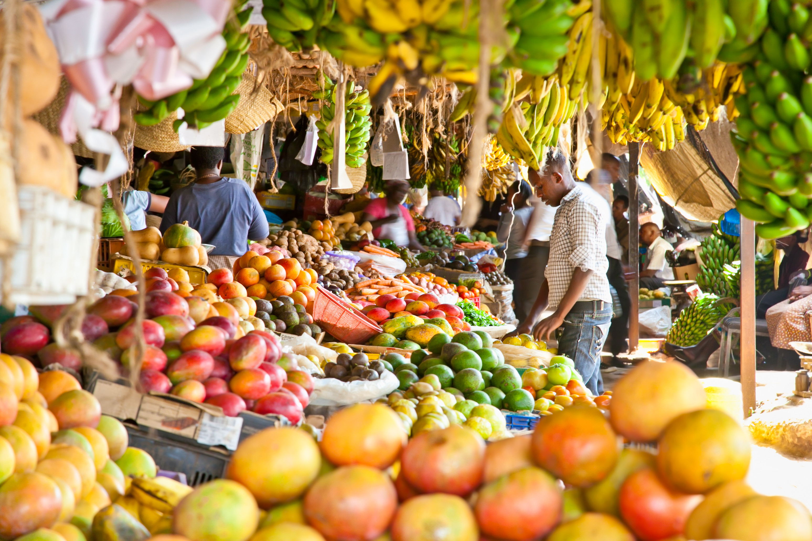

L’industrie agroalimentaire du Sénégal, enjeux et défis majeurs
L’industrie agroalimentaire (IAA) est un secteur qui contribue au développement économique du pays.
En effet, elle concentre plus du tiers (35,46%) de la production industrielle nationale en 2009
et est créatrice d’emplois et de la valeur ajoutée (38,5% de la valeur ajoutée globale du secteur
industriel). En outre, ses interdépendances vis-à-vis de l’agriculture, de la pêche et de l’élevage et la
densification des réseaux de distribution aussi bien dans les zones urbaines que dans la campagne font
dudit secteur un véritable pourvoyeur de ressources financières pour une frange importante de la population
et constituent par conséquent un moyen de lutte contre la pauvreté.

